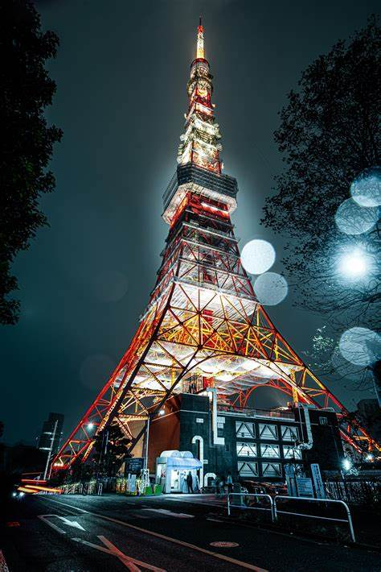

Tokyo

Tōkyō adalah salah satu dari 47 prefektur Jepang yang menjadi ibu kota Jepang sejak 1869. Hingga 2018, Tokyo Raya menempati peringkat pertama sebagai wilayah metropolitan terpadat di dunia. Tokyo menjadi tempat bertakhtanya Kaisar Jepang, pemerintah Jepang, dan Parlemen Jepang. Tokyo mencakup sebagian dari wilayah Kanto, Kepulauan Izu, dan Kepulauan Ogasawara. Tokyo dulunya bernama Edo ketika Shōgun Tokugawa Ieyasu menjadikan kota ini sebagai markas besarnya pada 1603. Kota ini berganti nama menjadi Tokyo setelah Kaisar Meiji menjadikannya sebagai ibu kota dan memindahkan takhtanya dari Kyoto pada tahun 1868. Metropolis Tokyo dibentuk pada tahun 1943 dari penggabungan bekas Prefektur Tokyo (東京府 Tōkyō-fu) dan Kota Tokyo (東京市 Tōkyō-shi). Tokyo sering kali disebut sebagai sebuah kota, padahal secara resmi Tokyo merupakan sebuah "prefektur metropolitan" yang sangat berbeda dari kota biasa dan menggabungkan unsur-unsur kota dan prefektur.
Dua puluh tiga Distrik Kota Khusus Tokyo (selanjutnya disebut DKK Tokyo atau DKK saja) dulunya adalah bagian dari Kota Tokyo. Pada 1 Juli 1943, kota Tokyo bergabung dengan Prefektur Tokyo dan menjadi Metropolis Tokyo dengan 26 kotamadya tambahan di bagian barat prefektur; kepulauan Izu serta kepulauan Ogasawara di selatan-tenggara Tokyo. Pada 1 Januari 2020, populasi Tokyo diperkirakan lebih dari 13,95 juta atau sekitar 11% dari total populasi Jepang. Perkiraan terbaru pada 2019 menunjukkan pertumbuhan populasi Tokyo mencapai 13,9 juta orang, dengan DKK sebanyak 9,6 juta jiwa, wilayah Tama 4,2 juta jiwa, dan Kepulauan 25.037 jiwa. Prefektur ini adalah bagian dari wilayah metropolitan terpadat di dunia dan ekonomi aglomerasi perkotaan terbesar di dunia yang disebut Tokyo Raya dengan populasi lebih dari 38 juta jiwa. Hingga 2011, Tokyo menjadi rumah bagi 51 perusahaan Fortune Global 500, jumlah tertinggi dari kota mana pun di dunia pada waktu itu. Tokyo dua kali berada di peringkat ketiga dalam Indeks Pengembangan Pusat Keuangan Internasional.[butuh rujukan] Kota ini adalah rumah bagi berbagai jaringan televisi seperti Fuji TV, Tokyo MX, TV Tokyo, TV Asahi, Nippon Television, NHK, dan Tokyo Broadcasting System.
Tokyo menempati urutan pertama dalam Indeks Kekuatan Ekonomi Global dan ketiga dalam Indeks Kota Global. Inventaris GaWC tahun 2018 mengklasifikasikan Tokyo sebagai kota dunia alpha dan hingga 2014 Survei Kota Dunia TripAdvisor menempatkan Tokyo sebagai yang pertama dalam kategori "Pengalaman Keseluruhan Terbaik" (kota ini juga menempati peringkat pertama dalam kategori berikut: "menolong penduduk setempat", "kehidupan malam", "belanja", "transportasi umum lokal", dan "kebersihan jalan-jalan"). Hingga 2018, Tokyo dinilai sebagai kota termahal kedua di dunia bagi ekspatriat menurut perusahaan konsultan Mercer dan juga kota termahal ke-11 di dunia menurut survei Economist Intelligence Unit. Pada 2015, Tokyo dinobatkan sebagai Kota Paling Layak Huni di dunia oleh majalah Monocle. Panduan Michelin sejauh ini telah memberi Tokyo bintang Michelin terbanyak di dunia. Tokyo menduduki peringkat pertama dari enam puluh kota dalam Indeks Kota Aman 2017. QS Best Student Cities menempatkan Tokyo sebagai kota terbaik ke-3 di dunia untuk menjadi mahasiswa pada tahun 2016 dan ke-2 pada tahun 2018.
Tokyo menjadi tuan rumah Olimpiade Musim Panas 1964, KTT G-7 1979, KTT G-7 1986, dan KTT G-7 1993, serta akan menjadi tuan rumah Piala Dunia Rugbi 2019, Olimpiade Musim Panas 2020, dan Paralimpiade Musim Panas 2020.
Penelitian dan pengembangan di Jepang dan program luar angkasa Jepang secara global diwakili oleh beberapa fasilitas medis dan ilmiah Tokyo, termasuk Universitas Tokyo dan universitas lain di Tokyo, yang bekerja dalam kolaborasi dengan banyak lembaga internasional. Terutama dengan Amerika Serikat, termasuk NASA dan banyak perusahaan penerbangan luar angkasa swasta, universitas-universitas di Tokyo memiliki hubungan kerja dengan semua lembaga Ivy League (termasuk Harvard, MIT, dan Universitas Yale), bersama dengan universitas riset dan laboratorium pengembangan lainnya, seperti kampus Stanford dan UC di seluruh California, serta UNM dan Sandia National Laboratories di Albuquerque, New Mexico. Mitra lain di seluruh dunia termasuk Universitas Oxford di Inggris, Universitas Nasional Singapura di Singapura, Universitas Toronto di Kanada, dan Universitas Tsinghua di Cina.